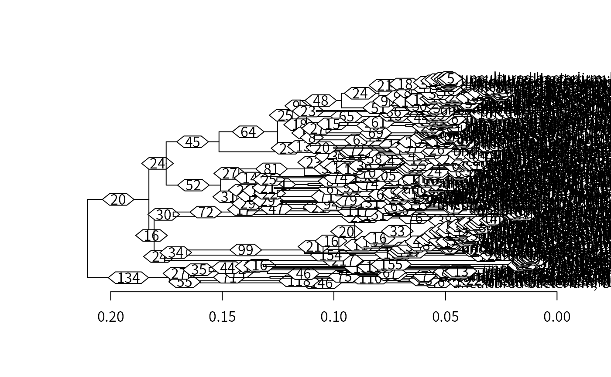
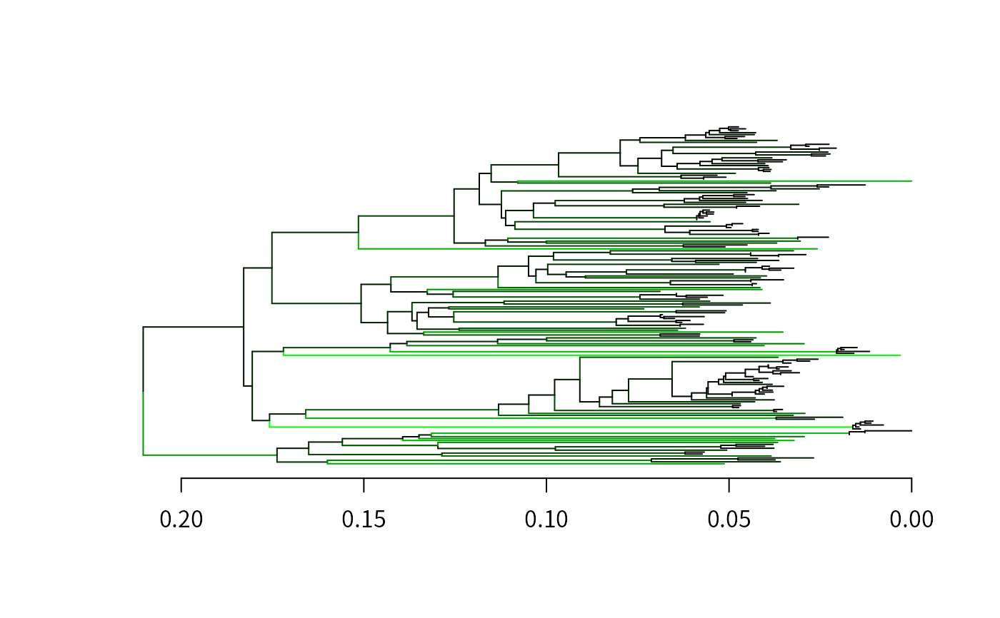

Map Changes in Ancestral Character States
MapCharacters.RdMaps character changes on a phylogenetic tree containing reconstructed ancestral states.
Arguments
- x
An object of class
dendrogramwith"state"attributes for each node.- refPositions
Numeric vector of reference positions in the original sequence alignment. Only changes at
refPositionsare reported, and state changes are labeled according to their position inrefPositions.- labelEdges
Logical determining whether to label edges with the number of changes along each edge.
- type
Character string indicating the type of output desired. This should be (an abbreviation of) one of
"dendrogram","table", or"both". (See value section below.)- chars
Character vector specifying the characters to consider in state changes at each site. The default (
LETTERS) is to consider any upper case letter. Alternatively,charscould beAA_STANDARD,DNA_BASES, orRNA_BASES.- ignoreIndels
Logical specifying whether to report insertions and deletions (indels). If
TRUE(the default), only substitutions of one state with another are reported.
Value
If type is "dendrogram" (the default) then the
original dendrogram
x is returned with the addition of
"change" attributes on every edge except the root. If type is
"table" then a sorted table of character changes is returned
with the most frequent parallel changes at the beginning. If type is
"both" then a list of length 2 is provided containing both the
dendrogram and table.
Details
Ancestral state reconstruction affords the ability to identify character
changes that occurred along edges of a rooted phylogenetic tree. Character
changes are reported according to their index in refPositions. If
ignoreIndels is FALSE, adjacent insertions and deletions are
merged into single changes occurring at their first position. The table of
changes can be used to identify parallel, convergent, and divergent
mutations.
Author
Erik Wright eswright@pitt.edu
Examples
fas <- system.file("extdata", "Bacteria_175seqs.fas", package="DECIPHER")
dna <- readDNAStringSet(fas)
# align the sequences
rna <- RNAStringSet(RemoveGaps(dna))
rna <- AlignSeqs(rna)
#> Determining distance matrix based on shared 9-mers:
#> ================================================================================
#>
#> Time difference of 1.52 secs
#>
#> Clustering into groups by similarity:
#> ================================================================================
#>
#> Time difference of 0.01 secs
#>
#> Aligning Sequences:
#> ================================================================================
#>
#> Time difference of 1.78 secs
#>
#> Iteration 1 of 2:
#> Predicting RNA Secondary Structures:
#> ================================================================================
#>
#> Time difference of 1.48 secs
#>
#> Determining distance matrix based on alignment:
#> ================================================================================
#>
#> Time difference of 0.07 secs
#>
#> Reclustering into groups by similarity:
#> ================================================================================
#>
#> Time difference of 0.01 secs
#>
#> Realigning Sequences:
#> ================================================================================
#>
#> Time difference of 1.68 secs
#>
#> Iteration 2 of 2:
#> Predicting RNA Secondary Structures:
#> ================================================================================
#>
#> Time difference of 1.5 secs
#>
#> Determining distance matrix based on alignment:
#> ================================================================================
#>
#> Time difference of 0.07 secs
#>
#> Reclustering into groups by similarity:
#> ================================================================================
#>
#> Time difference of 0.01 secs
#>
#> Realigning Sequences:
#> ================================================================================
#>
#> Time difference of 0.59 secs
#>
rna # input alignment
#> RNAStringSet object of length 175:
#> width seq names
#> [1] 1470 ----------------------...---------------------- uncultured bacter...
#> [2] 1470 ----------------------...CG-------------------- uncultured bacter...
#> [3] 1470 ----------------------...---------------------- uncultured bacter...
#> [4] 1470 ----------------------...CGGCCG---------------- uncultured bacter...
#> [5] 1470 ----------------------...CGGUG----------------- uncultured bacter...
#> ... ... ...
#> [171] 1470 ----------------------...---------------------- uncultured bacter...
#> [172] 1470 ----------------------...---------------------- uncultured bacter...
#> [173] 1470 ----------------------...---------------------- uncultured bacter...
#> [174] 1470 ----------------------...CGG------------------- uncultured bacter...
#> [175] 1470 ----------------------...---------------------- uncultured bacter...
d <- DistanceMatrix(rna, type="dist", correction="JC")
#> ================================================================================
#>
#> Time difference of 0.06 secs
#>
tree <- TreeLine(myDistMatrix=d,
method="NJ",
type="dendrogram",
myXStringSet=rna,
reconstruct=TRUE)
#> ================================================================================
#> Optimizing model parameters:
JC69 -ln(L) = 53341, AICc = 107631, BIC = 109168
JC69+G4 -ln(L) = 46743, AICc = 94439, BIC = 95978
K80 -ln(L) = 52567, AICc = 106087, BIC = 107627
K80+G4 -ln(L) = 45922, AICc = 92800, BIC = 94343
F81 -ln(L) = 53311, AICc = 107582, BIC = 109129
F81+G4 -ln(L) = 46709, AICc = 94383, BIC = 95933
HKY85 -ln(L) = 52552, AICc = 106068, BIC = 107618
HKY85+G4 -ln(L) = 45878, AICc = 92725, BIC = 94279
T92 -ln(L) = 52556, AICc = 106068, BIC = 107611
T92+G4 -ln(L) = 45908, AICc = 92777, BIC = 94323
TN93 -ln(L) = 52391, AICc = 105750, BIC = 107303
TN93+G4 -ln(L) = 45831, AICc = 92635, BIC = 94191
SYM -ln(L) = 52446, AICc = 105860, BIC = 107413
SYM+G4 -ln(L) = 45863, AICc = 92698, BIC = 94254
GTR -ln(L) = 52258, AICc = 105497, BIC = 107060
GTR+G4 -ln(L) = 45812, AICc = 92607, BIC = 94174
#>
#> The selected model was: GTR+G4
#>
#> Model parameters:
#> Frequency(A) = 0.257
#> Frequency(C) = 0.177
#> Frequency(G) = 0.368
#> Frequency(T) = 0.198
#> Rate A <-> C = 1.050
#> Rate A <-> G = 1.846
#> Rate A <-> T = 1.597
#> Rate C <-> G = 0.868
#> Rate C <-> T = 4.196
#> Rate G <-> T = 1.000
#> Alpha = 0.303
#>
#> Time difference of 59.32 secs
#>
out <- MapCharacters(tree,
labelEdges=TRUE,
type="both",
chars=RNA_BASES)
# plot the tree with defaults
tree <- out[[1]]
plot(tree, horiz=TRUE) # edges show number of changes

# color edges by number of changes
maxC <- 200 # changes at maximum of color spectrum
colors <- colorRampPalette(c("black", "darkgreen", "green"))(maxC)
colorEdges <- function(x) {
num <- attr(x, "edgetext") + 1
if (length(num)==0)
return(x)
if (num > maxC)
num <- maxC
attr(x, "edgePar") <- list(col=colors[num])
attr(x, "edgetext") <- NULL
return(x)
}
colorfulTree <- dendrapply(tree, colorEdges)
plot(colorfulTree, horiz=TRUE, leaflab="none")

# look at parallel changes (X->Y)
parallel <- out[[2]]
head(parallel) # parallel changes
#>
#> A1406U C606U C80U G637A A647G C1003G
#> 27 18 18 18 17 17
# look at convergent changes (*->Y)
convergent <- gsub(".*?([0-9]+.*)", "\\1", names(parallel))
convergent <- tapply(parallel, convergent, sum)
convergent <- sort(convergent, decreasing=TRUE)
head(convergent)
#> 1406U 838G 1003G 1000C 1273U 147A
#> 27 21 20 18 18 18
# look at divergent changes (X->*)
divergent <- gsub("(.*[0-9]+).*", "\\1", names(parallel))
divergent <- tapply(parallel, divergent, sum)
divergent <- sort(divergent, decreasing=TRUE)
head(divergent)
#> U577 U578 A647 C1003 C1004 U476
#> 35 33 32 31 31 31
# plot number of changes by position
changes <- gsub(".*?([0-9]+).*", "\\1", names(parallel))
changes <- tapply(parallel, changes, sum)
plot(as.numeric(names(changes)),
changes,
xlab="Position",
ylab="Total independent changes")
# count cases of potential compensatory mutations
compensatory <- dendrapply(tree,
function(x) {
change <- attr(x, "change")
pos <- as.numeric(gsub(".*?([0-9]+).*", "\\1", change))
e <- expand.grid(seq_along(pos), seq_along(pos))
e <- e[pos[e[, 1]] < pos[e[, 2]],]
list(paste(change[e[, 1]], change[e[, 2]], sep=" & "))
})
compensatory <- unlist(compensatory)
u <- unique(compensatory)
m <- match(compensatory, u)
m <- tabulate(m, length(u))
compensatory <- sort(setNames(m, u), decreasing=TRUE)
head(compensatory) # ranked list of concurrent mutations
#> C362G & G367C G978A & C1223U A241G & U251C C887U & G894A C98U & G109A
#> 13 10 9 9 8
#> U1116C & A1159G
#> 8